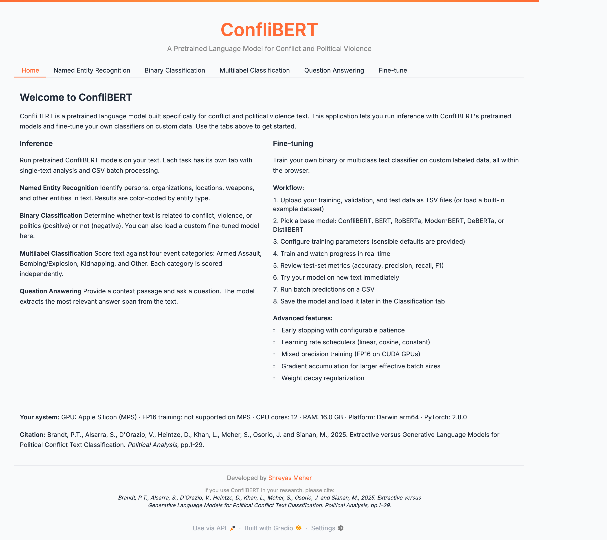
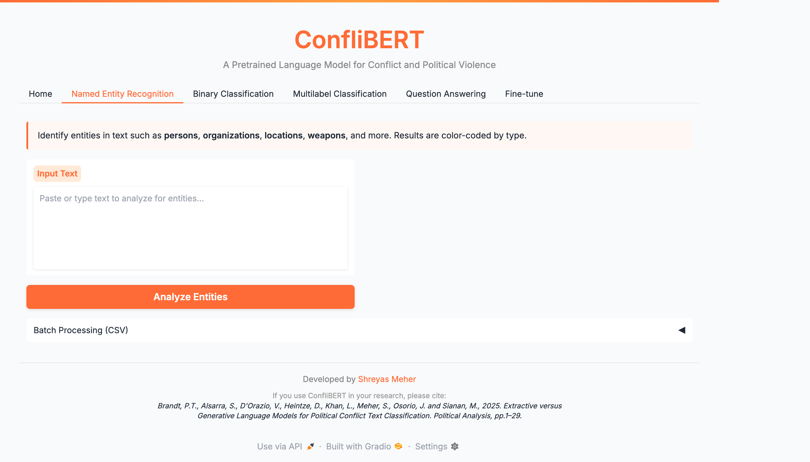
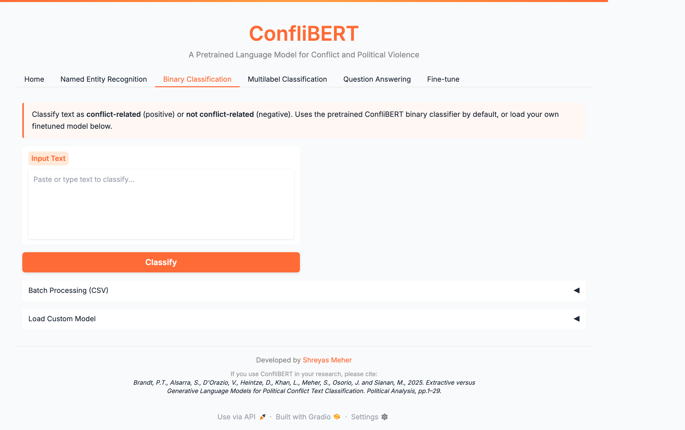
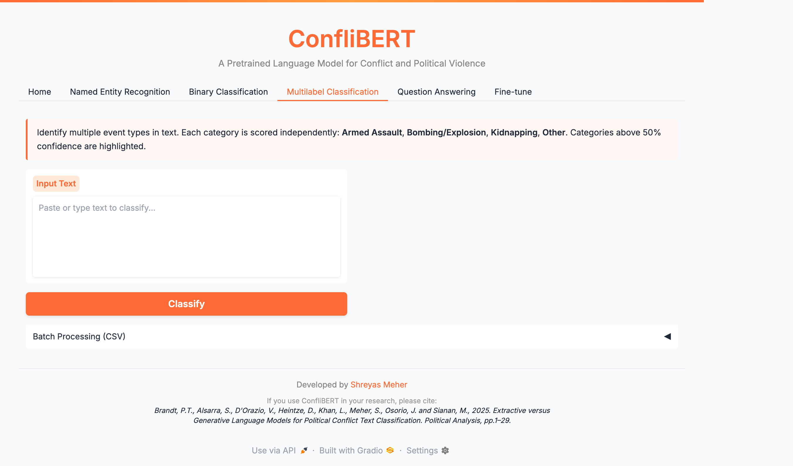
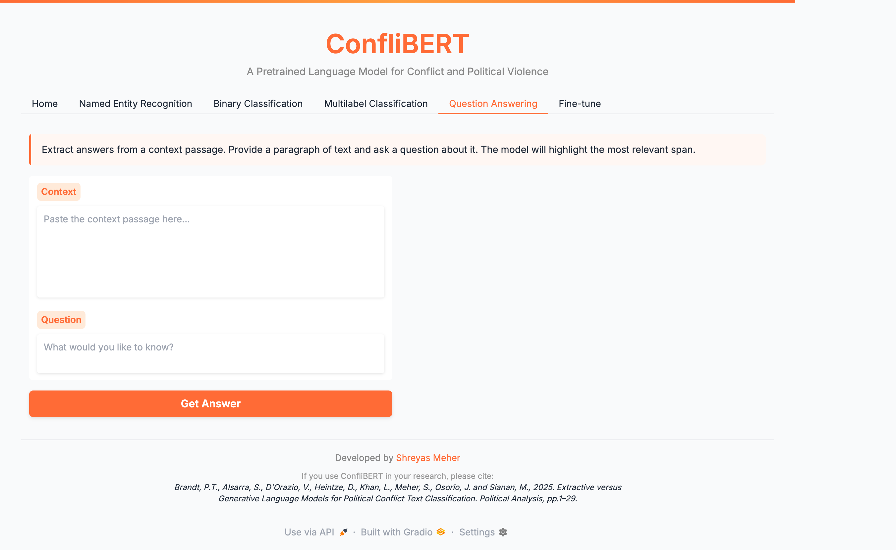
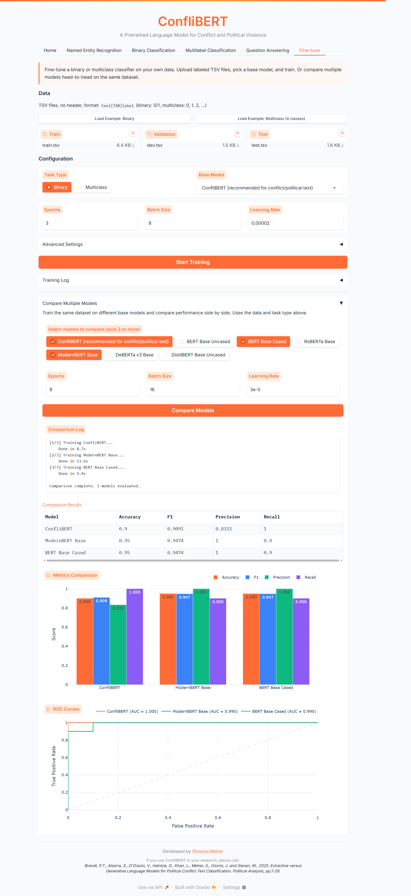

ConfliBERT GUI
A browser-based NLP toolkit for conflict and political violence text analysis. Built on ConfliBERT, the GUI provides an accessible interface for named entity recognition, text classification, question answering, and model fine-tuning — no coding required.
GitHub | Developed with Sultan Alsarra
Features
- Named Entity Recognition — Identify organizations, persons, locations, weapons, and temporal expressions in conflict text
- Binary Classification — Determine if text describes a conflict event, with confidence scores
- Multilabel Classification — Categorize text into event types: Armed Assault, Bombing/Explosion, Kidnapping, Other
- Question Answering — Extract answers from conflict-related passages
- Fine-Tuning — Train custom classifiers with LoRA/QLoRA on your own data, with seven base architectures
- Batch Processing — Upload CSVs for bulk analysis
Walkthrough
Home
The landing page lets you select your task and input text directly or upload a CSV for batch processing.

Named Entity Recognition
Paste any conflict-related text and the model identifies and color-codes named entities — persons, organizations, locations, weapons, and more.

Text Classification
Binary classification determines whether text describes a conflict event. Results include confidence scores for each class.

Multilabel Classification
Each text is scored against four event categories independently, useful for texts describing multiple event types.

Question Answering
Enter a passage and a question. The model extracts the relevant answer span directly from the text.

Fine-Tuning
Train custom classifiers on your labeled data. Select a base model, upload training/validation sets, configure hyperparameters, and monitor training progress.

Installation
# Clone the repository
git clone https://github.com/shreyasmeher/conflibert-gui.git
cd conflibert-gui
# Create virtual environment
python -m venv env
source env/bin/activate # Mac/Linux
# env\Scripts\activate # Windows
# Install dependencies
pip install -r requirements.txt
# Run
python app.py
# Open http://localhost:7860Requirements: Python 3.8+, PyTorch, Transformers, Gradio
Models
| Task | Model |
|---|---|
| NER | eventdata-utd/conflibert-named-entity-recognition |
| Binary Classification | eventdata-utd/conflibert-binary-classification |
| Multilabel | eventdata-utd/conflibert-satp-relevant-multilabel |
| Question Answering | salsarra/ConfliBERT-QA |
Citation
@inproceedings{hu2022conflibert,
title={ConfliBERT: A Pre-trained Language Model for Political Conflict and Violence},
author={Hu, Yibo and Hosseini, MohammadSaleh and Parolin, Erick Skorupa
and Osorio, Javier and Khan, Latifur and Brandt, Patrick and D'Orazio, Vito},
booktitle={Proceedings of NAACL-HLT 2022},
pages={5469--5482},
year={2022}
}